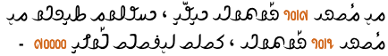
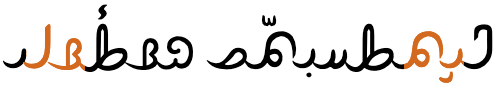
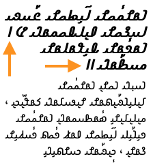
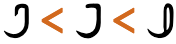
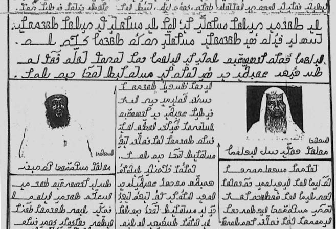
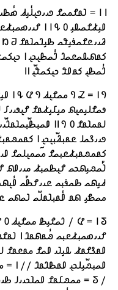
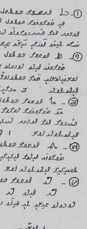

This page brings together basic information about the Hanifi Rohingya script and its use for the Rohingya language. It aims to provide a brief, descriptive summary of the modern, printed orthography and typographic features, and to advise how to write Rohingya using Unicode.
Hanifi Rohingya is one of four scripts used for writing the Rohingya language, spoken by about 1,500,000 people, mostly in Myanmar, but also in significant Rohingya-speaking refugee communities in Bangladesh and Thailand.
The other scripts are Arabic, Latin (called Rohingyalish), and Myanmar.
Hanifi Rohingya is actively used in newspapers and books and on the Web. The inventor estimates that around 50 Rohingya community Schools in Bangladesh refugee camps are teaching Hanifi Rohingya, and another 2,000 are learning in Malaysia and Saudi Arabia. There are also a number of web sites and apps dedicated to the script.
𐴌𐴟𐴇𐴥𐴝𐴚𐴒𐴙𐴝ɾuh²aŋgiaruˈhɪŋdʒaRohingya
For over 200 years, the Rohingya language has been written in Arabic script, using several orthographies, one of which was developed in 1975, but didn't gain much traction. The Latin orthography. called Rohingyalish or Rohingya Fonna, was developed in 1999 in order to make it easier to write Rohingya on computers.
Around 1960, scholars began to see a need for a completely new writing system that was tailored closely to the needs of the language and that provided a focus point for Rohingya culture. In the 1980s this lead to the development of the Hanifi Rohingya script by Mohammad Hanif and his colleagues.
The Hanifi Rohingya script is an alphabet. Both consonants and vowels are indicated by letters. See the table to the right for a brief overview of features for the Rohingya language.
Hanifi Rohingya is mostly a simple and largely phonetic orthography, clearly modelled on Arabic script, and yet with significant differences. All vowels are written as spacing letters. The only combining characters are for the 3 tones and a gemination marker. The script has no case distinction.
Hanifi Rohingya runs right to left in horizontal lines. Words are separated by spaces.
The script is cursive, but mostly simple joins at the baseline.
This orthography is an alphabet, and vowel sounds are written using 6 vowel letters, plus 2 semi-vowels used in diphthongs. Standalone vowel sounds, whether word-initial or -medial, are preceded by 𐴀 [U+10D00 HANIFI ROHINGYA LETTER A].
All vowels can be nasalised by following them with 𐴣 [U+10D23 HANIFI ROHINGYA MARK NA KHONNA]. Vowel length is affected by the application of the tones. Vowel absence is usually only marked at the end of a word and for certain characters only by the addition of 𐴢 [U+10D22 HANIFI ROHINGYA MARK SAKIN].
Punctuation is a mixture of Western and Arabic, and some texts use punctuation like the Myanmar section dividers.
Justification involves stretching the baseline between characters.
Distinctive characteristics: cursive and tonal; optional word-final vowel-absence marker; letter for nasalisation; one letter that joins only to the left.
Character index
Letters
Show
Basic consonants
𐴋␣𐴆␣𐴅␣𐴑␣𐴎␣𐴔␣𐴕␣𐴛␣𐴚␣𐴌␣𐴍␣𐴂␣𐴁␣𐴃␣𐴊␣𐴄␣𐴒␣𐴉␣𐴖␣𐴏␣𐴐␣𐴈␣𐴇␣𐴓␣𐴘
Vowels
𐴞␣𐴟␣𐴠␣𐴡␣𐴀␣𐴝␣𐴙␣𐴗
Other
𐴣␣𐴢␣ـ
Not used for modern Rohingya
𐴜
Combining marks
Show
Tones
𐴤␣𐴥␣𐴦
Other
𐴧
Numbers
Show𐴰␣𐴱␣𐴲␣𐴳␣𐴴␣𐴵␣𐴶␣𐴷␣𐴸␣𐴹
Punctuation
Show،␣؛␣؟␣۔␣‘␣’␣“␣”
ASCII
!␣(␣)␣.␣:
Other
Show␣␣␣␣␣␣␣␣
To be investigated
%␣[␣]␣§␣ʼ␣͏␣␣␣␣‑␣–␣—␣†␣‡␣…␣′␣″
Items to show in lists
Phonology
The following represents the repertoire of the Rohingya language.
Click on the sounds to reveal locations in this document where they are mentioned.
Phones in a lighter colour are non-native or allophones. Source Wikipedia.
Vowel sounds
Vowels can be nasalised.
Diphthongs often start or end in j or w, but vowels can also appear together with no intervening consonant.
Consonant sounds
labial
dental
alveolar
post-
alveolar
retroflex
palatal
velar
glottal
stop
pb
td
ʈɖ
cɟ
kɡ
ʔ
fricative
f
sz
ʃ
ç
x
h
nasal
m
n
ɲ
ŋ
approximant
w
l
j
trill/flap
ɾ
ɽ
Tone
Rohingya has 3 tones. They indicate stress and vowel length.
short and high
long and falling
long and rising
Structure
tbd
Vowels
Vowel summary table
The following table summarises the main vowel to character assigments.
A standalone vowel at the beginning of a word is always preceded by 𐴀 [U+10D00 HANIFI ROHINGYA LETTER A], which acts as a vowel carrier, eg.
𐴀𐴝𐴣𐴍𐴥𐴝𐴓𐴞𐴀𐴦𐴟𐴘
Similarly, in a sequence of vowels inside a word, the non-initial vowels are preceded by the carrier, eg.
𐴅𐴝𐴕𐴟𐴀𐴝𐴌𐴞
When 𐴀 [U+10D00 HANIFI ROHINGYA LETTER A] occurs without a following vowel letter at the beginning or in the middle of a word, it represents the vowel ɔ, eg.
𐴁𐴡𐴀𐴌 𐴉𐴝𐴃𐴝
These usually appear above the consonant in a syllable, however in some fonts the mark drifts to the left, so that it appears between the consonant and the vowel, eg.
𐴁𐴤𐴝ba¹ba𐴁𐴥𐴝ba²ba𐴁𐴦𐴝ba³ba
Observation: In order to achieve the best positioning using the Noto Sans Hanifi Rohingya and the Rohingya Noories One fonts, it is necessary to type the tone mark after the consonant (rather than after the vowel, as suggested in Pandey's script proposal).
When both 𐴧 [U+10D27 HANIFI ROHINGYA SIGN TASSI] and a tone mark appear together, it is important to type in and store both in the correct order for display. The tassi is typed and stored first,u,684 eg.
𐴔𐴡𐴙𐴅𐴧𐴤𐴙𐴠𐴊𐴠moiɟ&¹iede
These diacritics may appear side-by-side, with the tone mark to the left, when they occur together.u,684
Consonants with no following vowel
𐴢
Consonant clusters are typically written just as a sequence of consonant letters, eg.
𐴑𐴡𐴔𐴂𐴘𐴟𐴄𐴝𐴌
At the end of a word, or when just the consonant is written alone, 𐴢 [U+10D22 HANIFI ROHINGYA MARK SAKIN] is used after some consonants when there is no following vowel.
Consonants that typically take the sakin include the following:
𐴂𐴢␣𐴁𐴢␣𐴃𐴢␣𐴊𐴢␣𐴄𐴢␣𐴒𐴢␣𐴉𐴢␣𐴏𐴢␣𐴐𐴢␣𐴈𐴢␣𐴇𐴢␣𐴖𐴢␣𐴗𐴢␣𐴓𐴢␣𐴙𐴢
And those that don't:
𐴋␣𐴆␣𐴅␣𐴑␣𐴎␣𐴔␣𐴕␣𐴛␣𐴚␣𐴌␣𐴍
However, these rules are not hard and fast. For example, m may be written either way (see the example of 'turnip' below).
Examples:
𐴇𐴥𐴝𐴙𐴓𐴢𐴐𐴥𐴝𐴓𐴒𐴡𐴔𐴢𐴄𐴝𐴘𐴧𐴡𐴕𐴋𐴥𐴠𐴙𐴇𐴝𐴑
Vowel sounds to characters
This section maps Rohingya vowel sounds to common graphemes in the Hanifi Rohingya orthography. Click on a grapheme to find other mentions on this page (links appear at the bottom of the page). Click on the character name to see examples and for detailed descriptions of the character(s) shown.
Sounds listed as 'infrequent' are allophones, or sounds used for foreign words, etc.
Consonant clusters are written simply as a sequence of consonants.
𐴑𐴟𐴌𐴥𐴏𐴞𐴀𐴞𐴏𐴃𐴞𐴌𐴞𐴇𐴥𐴠𐴚𐴒𐴝𐴌
Gemination
Geminated consonant sounds are indicated using 𐴧 [U+10D27 HANIFI ROHINGYA SIGN TASSI], which is typed immediately after the consonant and before any following vowel, and which is rendered above the consonant letter, eg. compare the z sounds in the following
𐴎𐴥𐴞𐴘𐴡𐴎𐴧𐴝𐴔𐴝𐴘
Consonant sounds to characters
This section maps Rohingya consonant sounds to common graphemes in the Hanifi Rohingya orthography. Click on a grapheme to find other mentions on this page (links appear at the bottom of the page). Click on the character name to see examples and for detailed descriptions of the character(s) shown.
Sounds listed as 'infrequent' are allophones, or sounds used for foreign words, etc.
Numbers are written left-to-right within the overall right-to-left flow.
Text direction
Hanifi Rohingya text is written horizontally and right-to-left in the main but, as in most right-to-left scripts, numbers and embedded text in other scripts are written left-to-right (producing 'bidirectional' text).

Rohingya words are read right-to-left, starting from the right of this line, but numbers (highlighted) and Latin text are read left-to-right.
The Unicode Bidirectional Algorithm automatically takes care of the ordering for all the text in fig_bidi, as long as the 'base direction' is set to RTL. In HTML this can be set using the dir attribute, or in plain text using formatting controls.
For authoring HTML pages, one of the most important things to remember is to use <html dir="rtl" … > at the top of the page. Also, use markup to manage direction, and do not use CSS styling.
Managing text direction
Unicode provides a set of 10 formatting characters that can be used to control the direction of text when displayed. These characters have no visual form in the rendered text, however text editing applications may have a way to show their location.
More recently, the Unicode Standard added a set of characters which do the same thing but also isolate the content from surrounding characters, in order to avoid spillover effects. They are RLI [U+2067 RIGHT-TO-LEFT ISOLATE], LRI [U+2066 LEFT-TO-RIGHT ISOLATE], and PDI [U+2069 POP DIRECTIONAL ISOLATE]. The Unicode Standard recommends that these be used instead of RLE, LRE, and PDF.
There is also FSI [U+2068 FIRST STRONG ISOLATE], used initially to set the base direction according to the first recognised strongly-directional character.
Hanifi Rohingya is cursive, ie. letters in a word are joined up.
Nearly all letters join on both sides. 𐴢 [U+10D22 HANIFI ROHINGYA MARK SAKIN] joins only to the right. And 𐴀 [U+10D00 HANIFI ROHINGYA LETTER A] joins only to the left, which is very unusual. Fonts automatically produce the appropriate joining form for a code point, according to its visual context.
Cursive connections in the word 𐴃𐴞𐴕𐴑𐴟𐴙𐴕𐴧𐴝 𐴐𐴡𐴑𐴥𐴡𐴓𐴢.
The cursive treatment produces only minor changes to glyph shapes in most cases, other than extensions to the baseline. 𐴔 [U+10D14 HANIFI ROHINGYA LETTER MA] is an exception, with different final and medial/initial shapes (see fig_joining_forms).
There is a style of font which behaves slightly differently, and appears to be quite commonly used. fig_cursive_triangle_noories shows an example. Note how the n doesn't join to the right, and the o falls short of the l. The glyphs in this font don't have joining strokes to the right, and taper off and barely touch (if they do) to the left.

Cursive connections in the same word as in fig_cursive_triangle using the Rohingya Noories One font.
The following tables show all joining forms.
isolated
right-joined
dual-join
left-joined
joining groups
𐴂
ـ𐴂
ـ𐴂ـ
𐴂ـ
𐴂␣𐴉␣𐴜
𐴁
ـ𐴁
ـ𐴁ـ
𐴁ـ
𐴁
𐴃
ـ𐴃
ـ𐴃ـ
𐴃ـ
𐴃
𐴊
ـ𐴊
ـ𐴊ـ
𐴊ـ
𐴊
𐴄
ـ𐴄
ـ𐴄ـ
𐴄ـ
𐴄
𐴋
ـ𐴋
ـ𐴋ـ
𐴋ـ
𐴋
𐴆
ـ𐴆
ـ𐴆ـ
𐴆ـ
𐴆
𐴅
ـ𐴅
ـ𐴅ـ
𐴅ـ
𐴅
𐴑
ـ𐴑
ـ𐴑ـ
𐴑ـ
𐴑
𐴒
ـ𐴒
ـ𐴒ـ
𐴒ـ
𐴒
𐴏
ـ𐴏
ـ𐴏ـ
𐴏ـ
𐴏
𐴎
ـ𐴎
ـ𐴎ـ
𐴎ـ
𐴎
𐴐
ـ𐴐
ـ𐴐ـ
𐴐ـ
𐴐
𐴈
ـ𐴈
ـ𐴈ـ
𐴈ـ
𐴈
𐴇
ـ𐴇
ـ𐴇ـ
𐴇ـ
𐴇
𐴔
ـ𐴔
ـ𐴔ـ
𐴔ـ
𐴔
𐴕
ـ𐴕
ـ𐴕ـ
𐴕ـ
𐴕
𐴛
ـ𐴛
ـ𐴛ـ
𐴛ـ
𐴛
𐴚
ـ𐴚
ـ𐴚ـ
𐴚ـ
𐴚
𐴖
ـ𐴖
ـ𐴖ـ
𐴖ـ
𐴖
𐴗
ـ𐴗
ـ𐴗ـ
𐴗ـ
𐴗
𐴌
ـ𐴌
ـ𐴌ـ
𐴌ـ
𐴌
𐴍
ـ𐴍
ـ𐴍ـ
𐴍ـ
𐴍
𐴓
ـ𐴓
ـ𐴓ـ
𐴓ـ
𐴓
𐴘
ـ𐴘
ـ𐴘ـ
𐴘ـ
𐴘
𐴙
ـ𐴙
ـ𐴙ـ
𐴙ـ
𐴙␣𐴣␣𐴞␣𐴠
𐴟
ـ𐴟
ـ𐴟ـ
𐴟ـ
𐴟
𐴡
ـ𐴡
ـ𐴡ـ
𐴡ـ
𐴡
𐴝
ـ𐴝
ـ𐴝ـ
𐴝ـ
𐴝
𐴢
ـ𐴢
ـ𐴢ـ
𐴢ـ
𐴢
Joining forms for shapes that join on both sides. Those showing significant shape change are highlighted.
isolated
left-joined
letters
𐴀
𐴀ـ
𐴀
Joining forms for the shape that joins on the left only.
isolated
right-joined
letters
𐴢
ـ𐴢
𐴢
Joining forms for the shape that joins on the right only.
Context-based shaping
tbd
See just above for shaping related to cursive joining.
Graphemes
Grapheme clusters
tbd
Punctuation & inline features
Word boundaries
Word units are separated by spaces.
Phrase & section boundaries
،␣:␣؛␣۔␣.␣؟␣!
Rohingya uses a mixture of Arabic and ASCII punctuation, and may also use Myanmar signs.

An example of a page using an approximation of Myanmar section signs for punctuation. (The text has been right-aligned to make the example simpler. The original lacks directional markup.)
Bracketed text
(␣)
Rohingya commonly uses ASCII parentheses to insert parenthetical information into text.
It is important to note that the Unicode names for parentheses, brackets, and other paired characters should be ignored. LEFT should be read as if it said START, and RIGHT as END. The direction in which the glyphs point will be automatically determined according to the base direction of the text.
b > c" data-notes="Rohingya Noories One 49px">
 𐴁 > 𐴃" data-notes="Rohingya Noories One 49px">
Both of these lines use > [U+003E GREATER-THAN SIGN], but the direction it faces depends on the base direction at the point of display.
The number of characters that are mirrored in this way is around 550, most of which are mathematical symbols. Some are single characters, rather than pairs. The following are some of the more common ones used for Rohingya.
(␣)␣<␣>␣[␣]␣{␣}
Quotations & citations
‘␣’␣“␣”
Rohingya texts use quotation marks around quotations. Of course, due to keyboard design, quotations may also be surrounded by ASCII double and single quote marks. Note, however, that the order of use is different from that in LTR text, because they are not automatically mirrored.
Unlike the bracketing quotation marks, these characters are not mirrored during display. This means that LEFT means use on the left, and RIGHT means use on the right.
Line & paragraph layout
Line breaking & hyphenation
tbd
Observation: Lines appear to be broken at word boundaries.
When a line break occurs in the middle of an embedded left-to-right sequence, the items in that sequence need to be rearranged visually so that it isn't necessary to read lines from top to bottom.
Of course, the rearragement is only that of the visual glyphs: nothing affects the order of the characters in memory.
Text alignment & justification
Examples of printed matter show full justification. A baseline extension is frequently used to stretch words in order to achieve flush lines (see fig_justification).

Example of full justification, with the word at the end of the 3rd line from the bottom also showing signs of being stretched.
Pandey recommends using ـ [U+0640 ARABIC TATWEEL] for this.p,12 However, it should be noted that the tatweel character is only useful if the text is static. If window resizing or inserted text cause the line breaks to appear between different words, the tatweels will end up in the wrong place.
Baselines, line height, etc.
tbd
Rohingya uses the so-called 'alphabetic' baseline, which is the same as for Latin and many other scripts.
Counters, lists, etc.
You can experiment with counter styles using the Counter styles converter. Patterns for using these styles in CSS can be found in Ready-made Counter Styles, and we use the names of those patterns here to refer to the various styles.
Hanifi Rohingya uses numeric counters.
Numeric
The numeric style is decimal-based and uses these digits.
𐴱␣𐴲␣𐴳␣𐴴␣𐴵␣𐴶␣𐴷␣𐴸␣𐴹␣𐴰
Examples:
𐴲␣𐴳␣𐴴␣𐴵␣𐴶␣𐴲𐴲␣𐴳𐴳␣𐴴𐴴␣𐴵𐴵␣𐴲𐴲𐴲␣𐴳𐴳𐴳␣𐴴𐴴𐴴␣𐴵𐴵𐴵
Prefixes and suffixes
Observation: Further examples are needed to clarify the standard prefix and/or suffix for lists. The examples in fig_counters show circled numbers followed by a hyphen, and numbers followed by an equals sign.


Examples of counters in Rohingya.
Page & book layout
General page layout & progression
Arabic books, magazines, etc., are bound on the right-hand side, and pages progress from right to left.
Binding configuration for Arabic books, magazines, etc.
Columns are vertical but run right-to-left across the page.